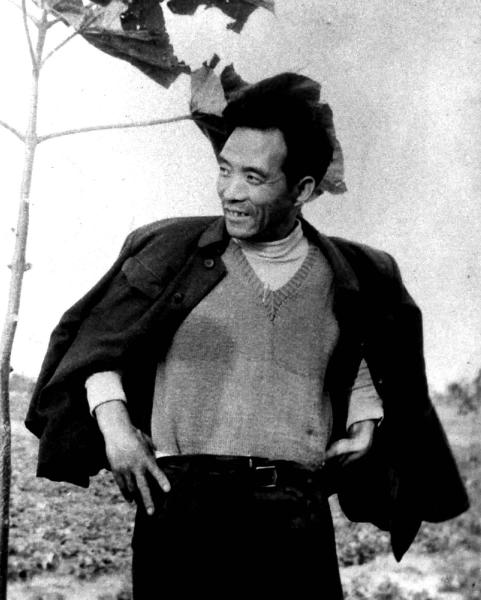
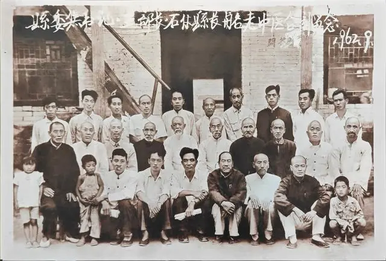

人物简介
焦裕禄（1922年8月16日—1964年5月14日），男，汉族，山东淄博博山区北崮山村人，原兰考县委书记，干部楷模，中国共产党革命烈士。在兰考担任县委书记时所表现出来的“亲民爱民、艰苦奋斗、科学求实、迎难而上、无私奉献”的精神，被后人称之为“焦裕禄精神”。
人物事迹
早年经历
焦裕禄出生在一个贫困农民，青少年时期受尽了苦难的煎熬。7岁上学，学习刻苦认真，考试成绩总是处于班上前列。1932年家庭遭遇灾祸，家庭情况十分困难。11岁的焦裕禄不得不退学，跟着穷乡亲们推着独轮小车，买碳运煤，以此来缓解家庭情况，为家庭减轻压力。
1937年，全面抗日战争爆发，到1938年日军侵占博山县城（今山东淄博博山区），国民党军队一枪不放就便宜了日本侵略者。日本侵略者侵占县城之后，经常在焦裕禄的家乡扫荡。
在焦裕禄16岁到18岁(1939年-1941年)期间，汉奸伪军在南古山村建立了据点，并很快在他家附近的沅泉村、郭庄村也修建了据点，他家所在的北崮村一带成了敌人的中心地区。汉奸经常到北崮村要粮要钱，老百姓说不定何时便被抓去，受罪还得花钱才能出来。这3年中，他除了在家种地外，农闲时做点小生意维持生活，主要是卖菜卖油，在古山桥卖锅饼，还到煤窑做工。
1941秋天，焦裕禄的父亲因生活所迫自杀。对这件事焦裕禄在“情况介绍”中说：“1941年因生活困难，还要给汉奸纳粮交款，明年我还要结婚，父亲终日愁闷，秋天上吊自杀了。”父亲死了过后，家里生活更困难了，还欠下了不少债，他与哥哥分了家，与母亲一起过。
参加革命
焦裕禄进了党组织，参加了民兵队伍。焦裕禄很快担任了村里的民兵班长，他经常带领民兵打土豪、除汉奸，配合部队消灭敌人。在党的教育、培养下，焦裕禄同志于1946年元月，光荣地加入中国共产党，成为一名坚强的革命战士。
焦裕禄入党不久，领导上就把他调到八陡区武装部任干事。在武装部工作期间，他敢于斗争，善于斗争。
为国为人做实事
1962年冬，焦裕禄受党的委派来到了兰考。由于兰考的自然灾害非常严重，焦裕禄同志以高度的革命精神，在困难面前不退缩，带领群众进行抗灾自救。
在兰考任县委书记时，焦裕禄同志通过调查研究，摸索出了正确的抗灾方式，并以身作则，带领群众进行了有效的“三害”斗争，最终成功改造了兰考的自然环境。
